AutoPilot operations
The operating layer brings financial visibility, approvals, human decisions, audit history, workspace agents, team conversations, and connected data into one five-tab shell.
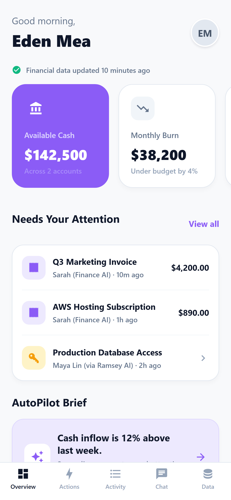
Operational overview
Cash, burn, pending actions, briefings, activity, and the Venture OS entry share one dashboard.
/dashboard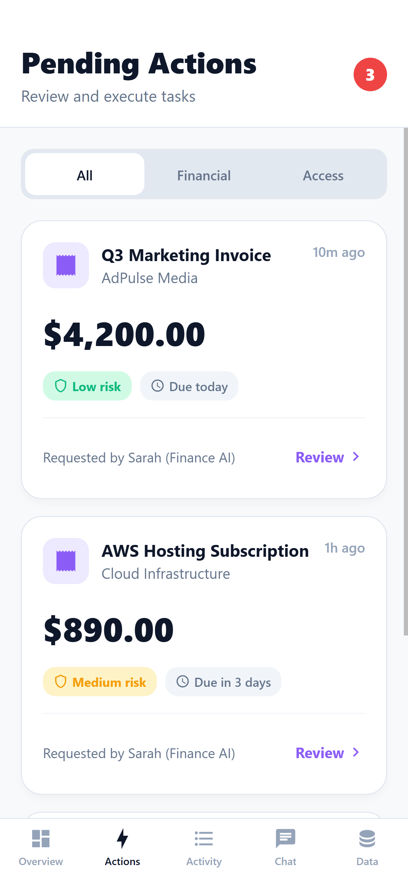
Approval queue
Financial and access requests surface risk, due dates, requesters, and review actions.
/actions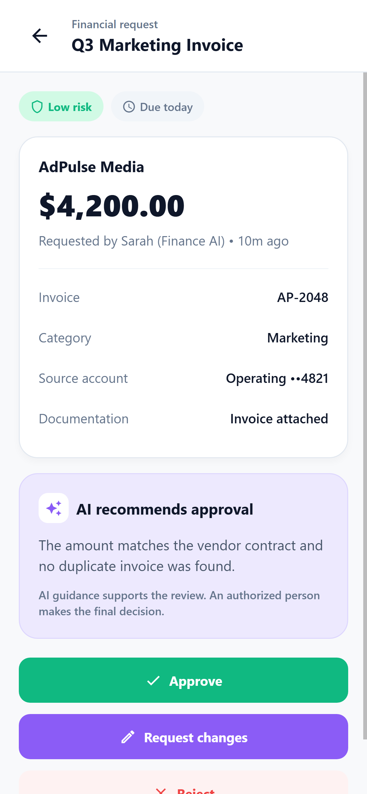
Human review
Evidence and AI guidance support the decision while an authorized person remains in control.
/action/1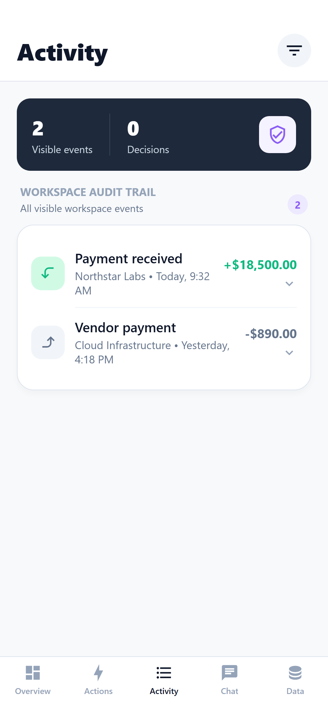
Audit activity
Visible money movements and decisions are organized into a role-aware workspace trail.
/transactions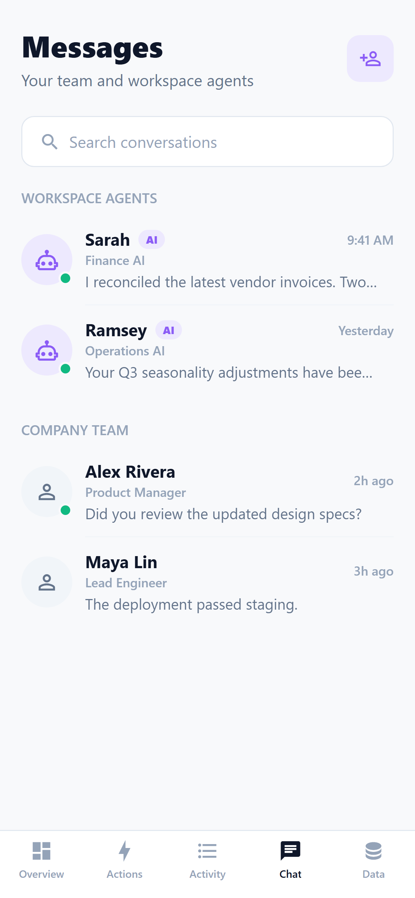
Agents and team
Searchable conversations keep workspace agents and human teammates in one place.
/chat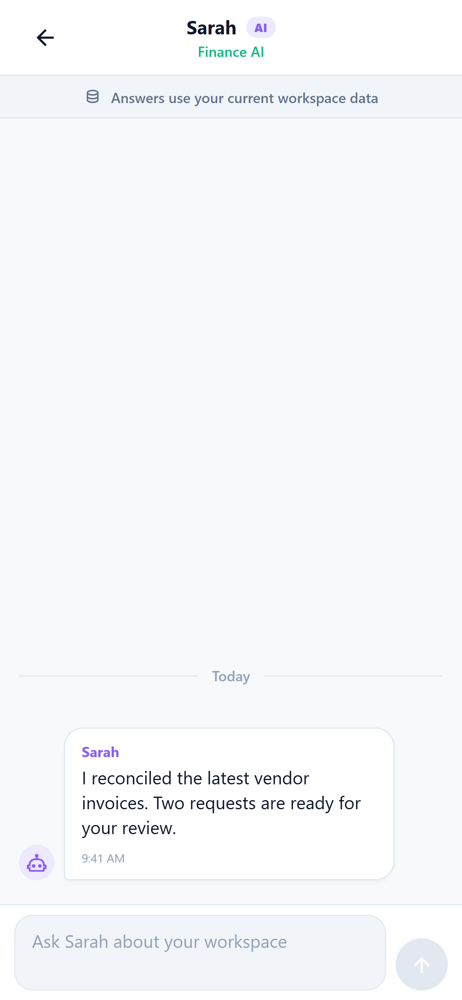
Agent conversation
Thread access, workspace context disclosure, message history, and composition form a usable chat.
/message?threadId=sarah-finance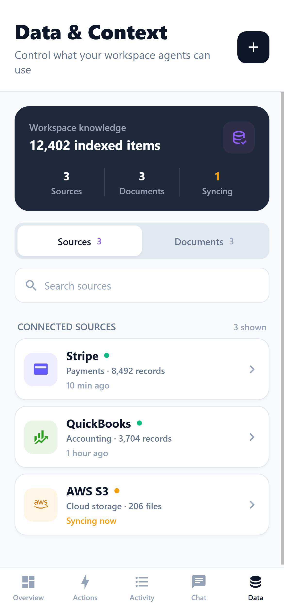
Data and context
Admins can inspect source health, search knowledge, connect systems, and manage synchronization.
/dataVenture OS journey
The founder layer turns company context and authored learning into persistent decisions, practical tools, and cohort discussion while preserving deterministic return to AutoPilot.
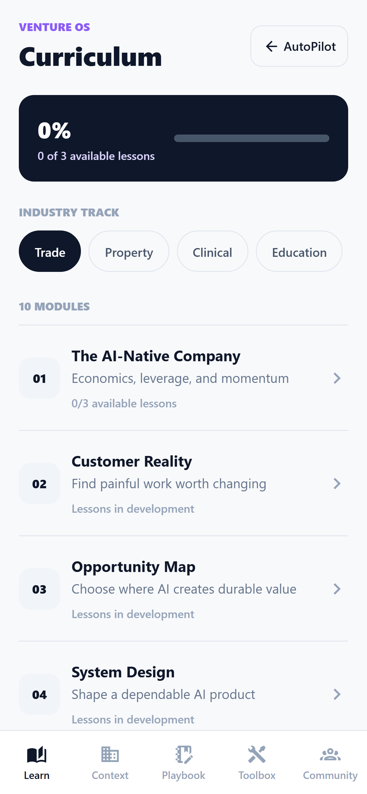
Curriculum
Track selection, progress, published lessons, and release states live in one scan-friendly view.
/venture-os/curriculum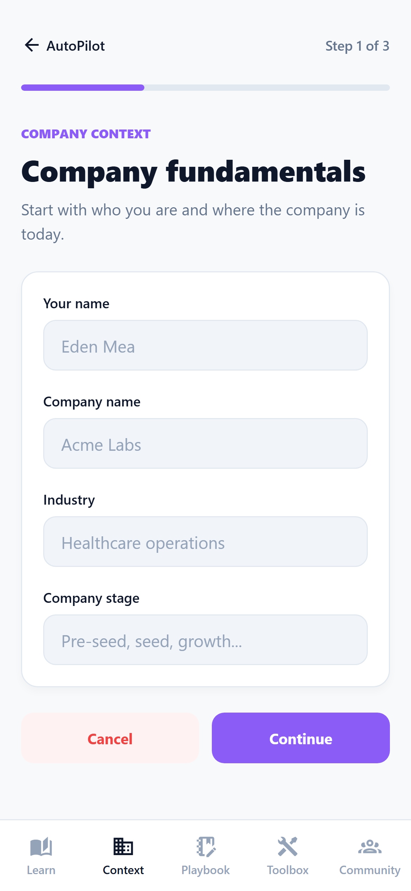
Company Context
A three-step native workflow gathers the company facts used to personalize the journey.
/venture-os/context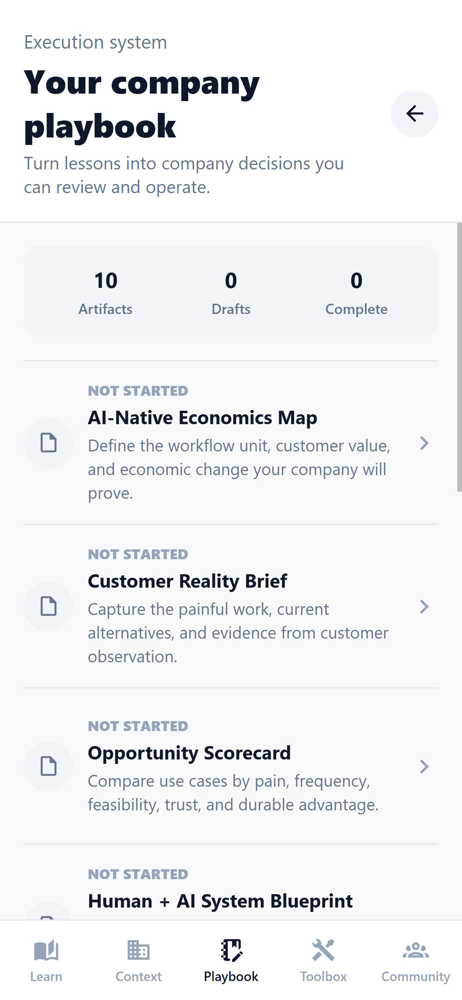
Company Playbook
Ten operating artifacts make progress, drafts, and completed decisions visible.
/venture-os/playbook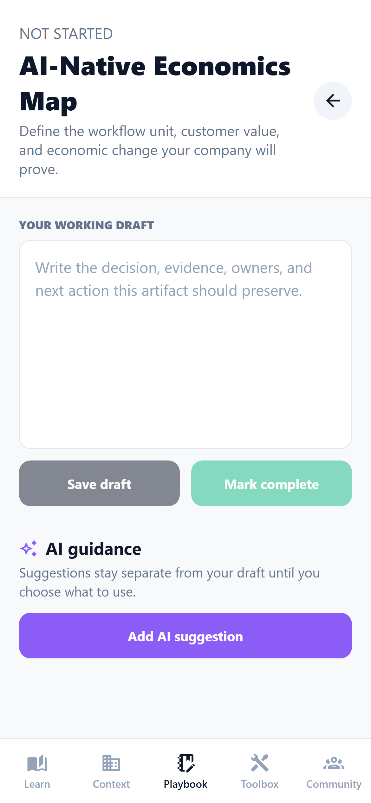
Artifact workspace
Founder-authored work is saved separately from clearly attributed AI guidance.
/venture-os/playbook/ai-economics-map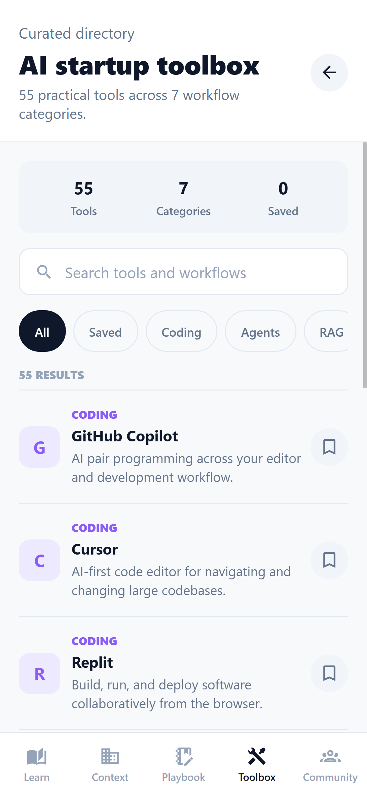
Toolbox
A searchable directory covers 55 tools across seven practical workflow categories.
/venture-os/toolbox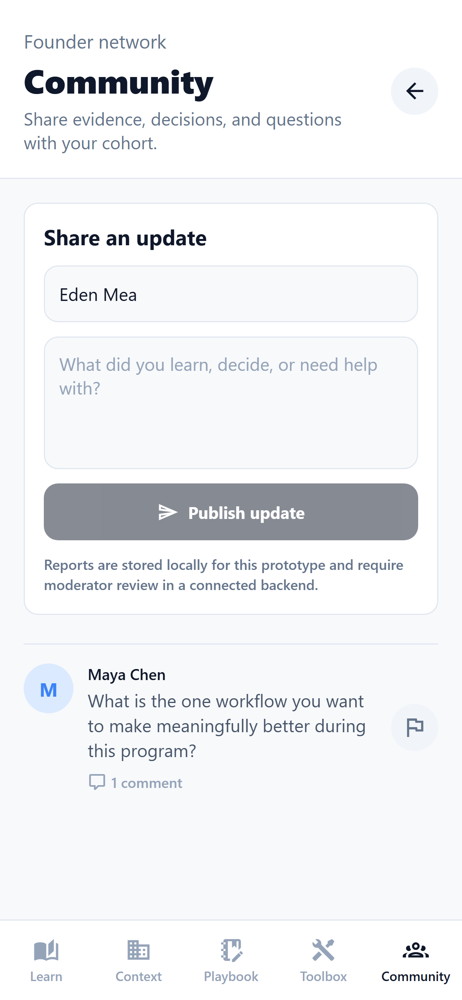
Community feed
Founders can post updates, open discussions, and report content through accessible controls.
/venture-os/community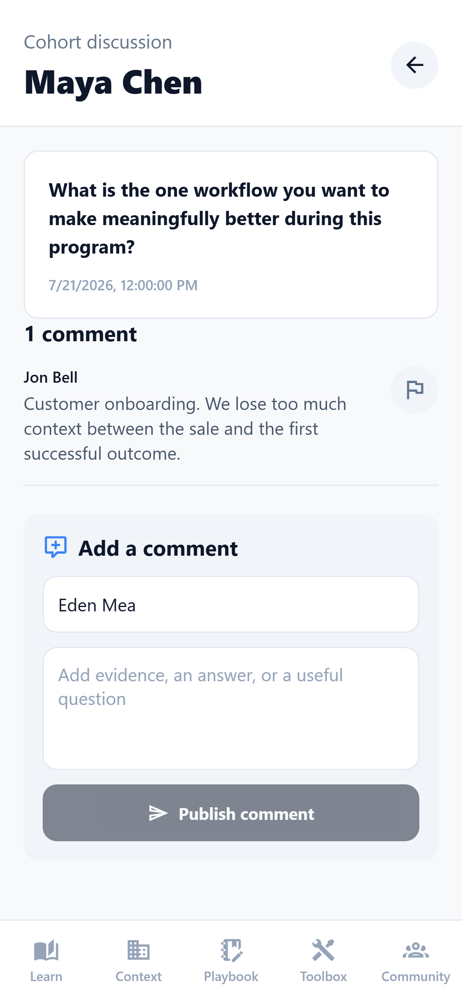
Discussion detail
Stable deep links support persisted comments, reporting, and deterministic return navigation.
/venture-os/community/welcome-to-the-cohortWhat this proves
- AutoPilot and Venture OS share one Expo Router shell.
- All 14 captured routes rendered without horizontal overflow.
- Both domains retain visible, deterministic five-tab navigation.
- Approvals preserve explicit human decision authority.
- Workspace agents disclose their use of current business data.
- Learning, artifacts, tools, and Community have persisted workflows.